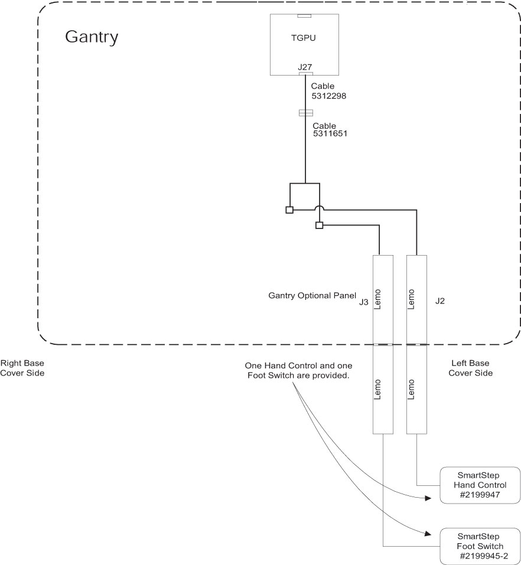
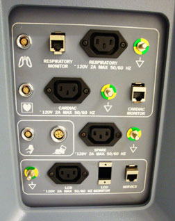

Operating Documentation
Direction 5193574-800, Rev# 22
LightSpeed 7.X Service Methods
Module Version 1.0, Version Date 6/29/11
Operating Documentation |

Confirm that the LEMO plugs are available in the IPC panel. If so, connect the footswitch and hand control assemblies.
If the cable is not present, use the figure above to route the cables 2355108 and 228866150.
Connect the end of cable 2355108 to the TGPU J27 and the other end to the J15 of cable 228866150.
Connect the LEMO connector to the IPC panel.
Locate J27.
Illustration 1: Gantry External Connections
